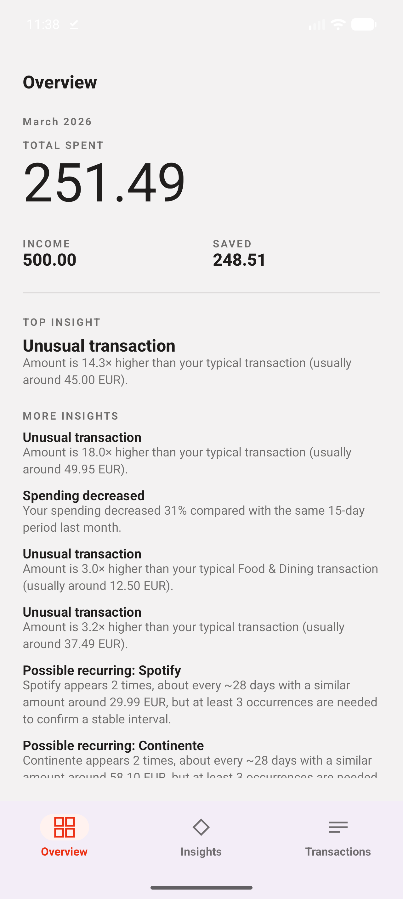
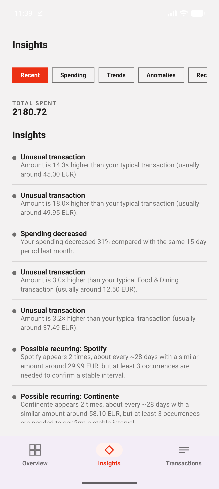
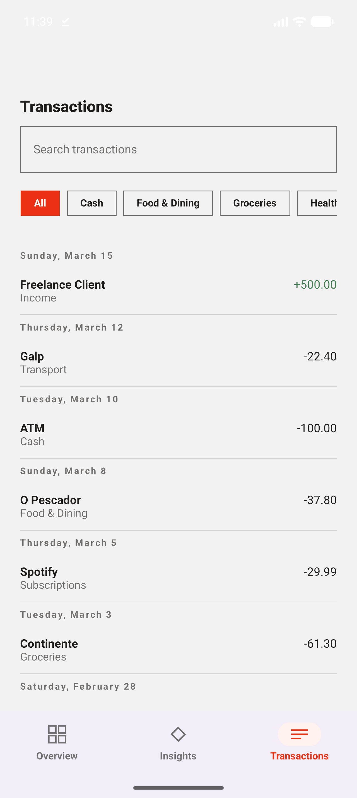

I started as a software engineer building mobile applications, focused on shipping reliable, well-structured products. Over time, the questions I found most interesting moved upstream — not just how a feature works, but what the data behind it says.
That curiosity led me into data science and machine learning. I enjoy exploratory data analysis: digging through a dataset to find patterns, anomalies, and the small inconsistencies that usually matter most.
I'm not interested in models for their own sake. I care about end-to-end products — the full path from raw data to something a user can actually open and use.
A personal analytics platform that turns a CSV export of bank transactions into spending trends, anomaly detection, recurring-subscription detection, and explainable insights — processed and stored entirely on-device, with every threshold documented and evidence-motivated rather than fitted to a model.



Code, experiments, analysis and the process behind my projects.
View GitHub profile